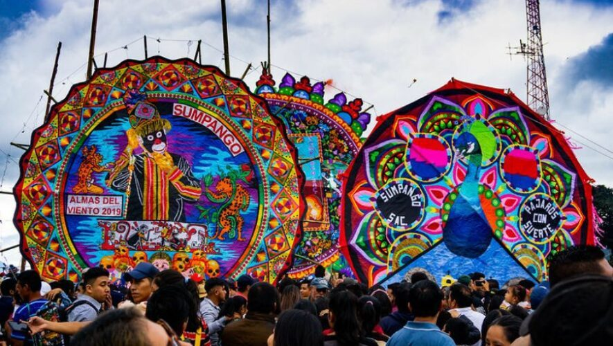
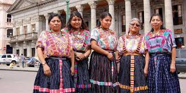
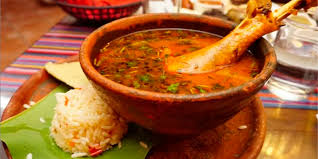
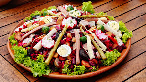

Cultura y tradiciones
la cultura guatemalteca es un mosaico de influencias mayas y españolas.
- semana santa: famosa por sus procsiones y alfombras de aserrin
- Barriles Gigantes
Tradicion del 1 de noviembre en sumpango

- Trajes regionales
Textiles hecho mano que identifican a cada comunidad

Gastronomia tipica
- pepian: guiso tradicional

- kak 'ik: caldo de pavo de origen maya

- fiambre: plato especial de noviembre
